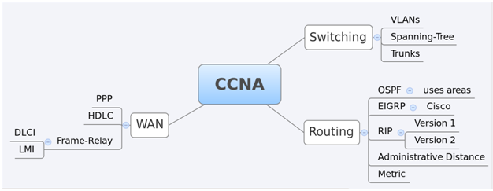

CCNA-vKhmer
1.0.1
Contents:
About the Author
Networking មូលដ្ឋាន
មធ្យោបាយផ្សព្វផ្សាយ(Network Media)
ប្រភេទNetwork &topo
TCP/IP
Need Help
CCNA-vKhmer
Docs
»
សូមស្វាគមន៍មកកាន់ CCNA-vKhmer!
View page source
សូមស្វាគមន៍មកកាន់ CCNA-vKhmer!
¶

Contents:
¶
About the Author
Networking មូលដ្ឋាន
សេចក្ដីផ្ដើម
តើអ្វីទៅជា Network?
ហេតុអ្វីបានជាត្រូវការបណ្ដាញកុំព្យូទ័រ?
Client Operating Systems & Network Operating Systems
Network Application
មធ្យោបាយផ្សព្វផ្សាយ(Network Media)
ប្រភេទខ្សែកាបតបណ្ដាញ
ប្រភេទខ្សែUTP
ប្រភេទNetwork &topo
Personal Area Network (PAN)
Local Area Network (LAN)
Metropolitan Area Network (MAN)
Wide Area Network (WAN)
ប្រភេទបណ្ដាញផ្សេងៗទៀត
ប្រភេទtopoបណ្ដាញ
TCP/IP
OSI model
TCP/IP model
Need Help